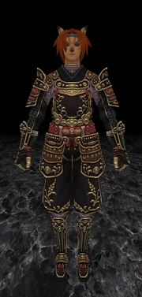

Level 75 reference · Zenith rules


This incredibly ornate and rare set of armor appears to be created out of some of the finest and most luxurious pieces of clothes, metals, and leathers. This set grants high bonuses in Strength, Dexterity, Agility, Accuracy, and Attack - making it quite a sought-after piece for the damage dealers that are able to don it. Additional bonuses include: a quadruple Zanshin enhancement; a 5% Critical Hit bonus; and, when wearing more than one piece of the set, a Store TP bonus. The set is not easy to come by as it requires fighting some of the hardest monsters in Vana'diel - including the infamous Pandemonium Warden. It is well worth the trouble, though, for the Warrior, Monk, Ranger, Samurai, or Ninja who works to attain it.
Number of Pieces: 4
Cost to store: No info.
Level Armor Piece 75 Hachiryu Haramaki
[Body] All Races
DEF: 52
Accuracy +20 Attack +20
Critical Hit Rate +5%
Enhances "Zanshin" Effect
Set:
Enhances "Store TP" Effect
Lv. 75 WAR / MNK / RNG / SAM / NIN
75 Hachiryu Kote
[Hands] All Races
DEF: 26
DEX +10 Accuracy +5
Enhances "Zanshin" effect
Set:
Enhances "Store TP" effect
Lv. 75 WAR / MNK / RNG / SAM / NIN
75 Hachiryu Haidate
[Legs] All Races
DEF: 42
STR +10 Attack +5
Enhances "Zanshin" effect
Set:
Enhances "Store TP" effect
Lv. 75 WAR / MNK / RNG / SAM / NIN
75 Hachiryu Sune-Ate
[Feet] All Races
DEF: 30
AGI +10 Evasion +5
Enhances "Zanshin" effect
Set:
Enhances "Store TP" effect
Lv. 75 WAR / MNK / RNG / SAM / NIN
Set Summary
- Defense +150
- Accuracy +25
- Attack +25
- STR +10
- DEX +10
- AGI +10
- Evasion +5
- Critical Hit +5%
- Enhances "Zanshin" Effect
- Set: Enhances "Store TP" Effect
Note: Any two pieces of this set grant +5 Store TP, while three grant +10 Store TP, and finally, all four grant +20 Store TP.
Adapted from Eden Wiki: Hachiryu Haramaki Set · Contributors and history · CC BY-SA 4.0. Revision 44736. Layout, links and optional background text adapted for Zenith.